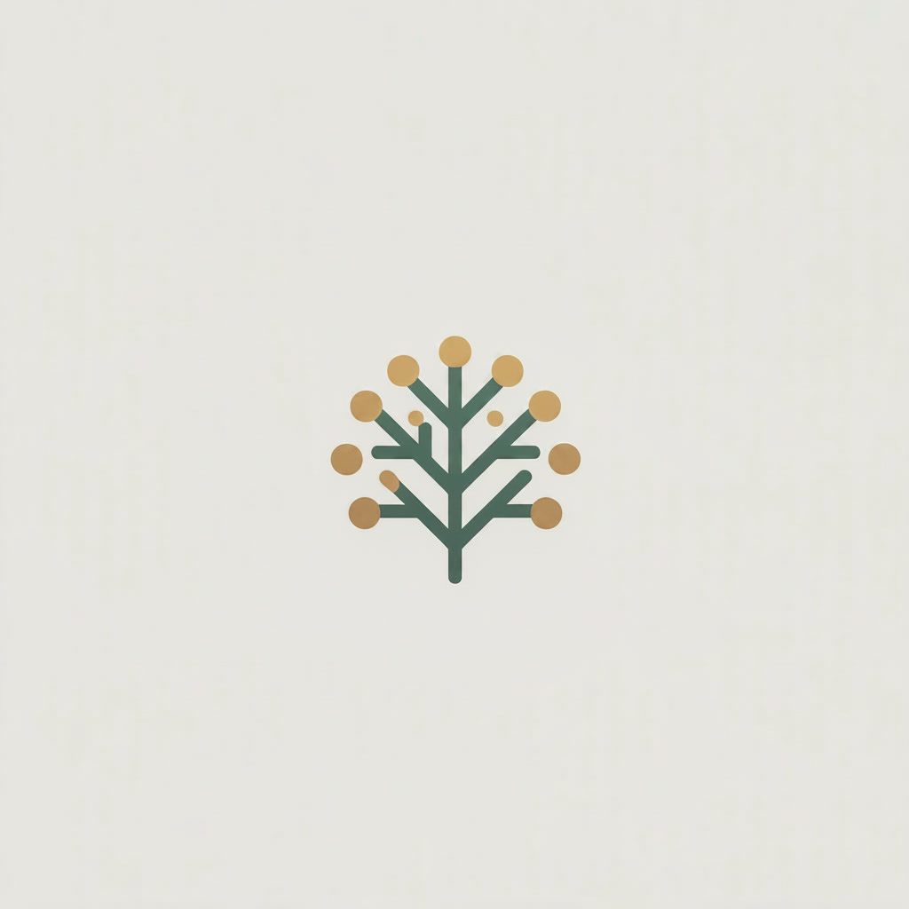

Luz nas ObrasManual básico do estudante
Este guia apresenta os primeiros passos para estudar com tranquilidade no Luz nas Obras, um aplicativo gratuito para apoiar o estudo Espírita-Cristão.
1. Entrando no aplicativo
No painel principal você encontrará os caminhos de estudo: O Livro dos Espíritos, O Evangelho Segundo o Espiritismo, Bíblia, Meus Estudos, Busca Espírita-Cristã e o Lume.
2. Criando sua conta
A conta permite salvar e sincronizar seus estudos entre aparelhos.
- Salvar anotações, reflexões e estudos preparados pelo Lume.
- Concluir questões e continuar leituras em outro aparelho.
- Usar notificações e lembretes, quando disponíveis.
- Enviar feedback pelo app.
3. O Livro dos Espíritos
Na área do Livro dos Espíritos, navegue pela lista de questões ou busque diretamente pelo número.
- Leia pergunta, resposta e comentários quando existirem.
- Crie anotações pessoais e marque a questão como concluída.
- Peça uma reflexão ao Lume e veja pontes de estudo sugeridas.
- Acesse vínculos com Bíblia e Evangelho quando disponíveis.
4. O Evangelho Segundo o Espiritismo
O Evangelho está organizado por capítulos e itens, com espaço para leitura calma e reflexão pessoal.
- Ajuste o tamanho da fonte nas configurações de leitura.
- Crie anotações por item.
- Abra referências bíblicas citadas no texto.
- Veja pontes sugeridas para O Livro dos Espíritos.
5. Bíblia e Strong
Na área da Bíblia, escolha o livro, capítulo e tradução desejada.
- Leia a Bíblia ACF ou a ARA Strong.
- Na ARA Strong, palavras sublinhadas abrem informações do idioma original.
- Crie anotações por versículo e vínculos com questões do Livro dos Espíritos.
6. Usando o Lume
O Lume é o assistente de estudo com IA do Luz nas Obras.
- Ele apoia reflexões, estudos temáticos, perguntas doutrinárias e caminhos de leitura.
- Não é uma pessoa e não representa orientação espiritual.
- As respostas podem conter erros; confira sempre as fontes.
- Perguntas fora do escopo Espírita-Cristão são recusadas com gentileza.
7. Meus Estudos
Em Meus Estudos você encontra reflexões, estudos temáticos, estudos bíblicos orientados, anotações pessoais e histórico de leitura.
8. Busca Espírita-Cristã
A busca reúne caminhos de leitura nas obras, na Bíblia e no seu acervo pessoal. Ela ajuda a encontrar material de estudo, sem afirmar automaticamente que todos os resultados estejam vinculados entre si.
9. Leitura confortável
Use as configurações de leitura para aumentar ou reduzir a fonte, escolher a versão bíblica e tornar o estudo mais confortável no celular, tablet ou computador.
10. Uso offline
Você pode baixar a biblioteca offline para continuar estudando mesmo quando a internet falhar.
- Leituras baixadas continuam disponíveis.
- Novas anotações ficam guardadas no aparelho.
- A sincronização acontece quando a conexão voltar.
11. Feedback
Use o botão Feedback no app para enviar sugestões, problemas encontrados ou comentários. Esse retorno ajuda a cuidar do aplicativo com atenção e carinho.
12. Uma forma simples de começar
- Crie sua conta.
- Abra O Livro dos Espíritos e leia uma questão.
- Faça uma anotação pessoal.
- Marque a questão como concluída.
- Leia um item do Evangelho.
- Abra uma passagem bíblica relacionada ao seu estudo.
- Use o Lume apenas como apoio, conferindo sempre as fontes.
O Luz nas Obras é oferecido gratuitamente como uma ferramenta de estudo. Seu propósito é apoiar quem deseja estudar a Doutrina Espírita e o Evangelho com seriedade, simplicidade e acolhimento.